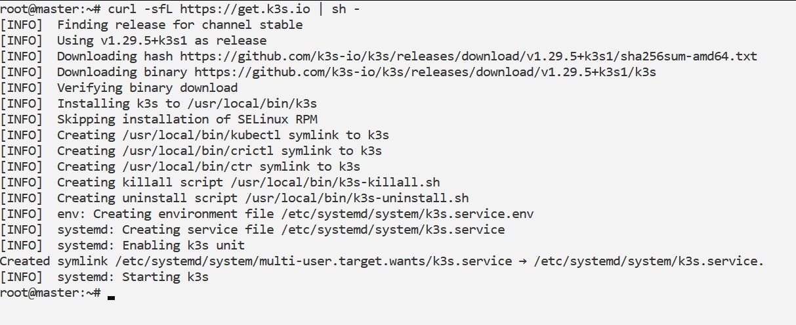
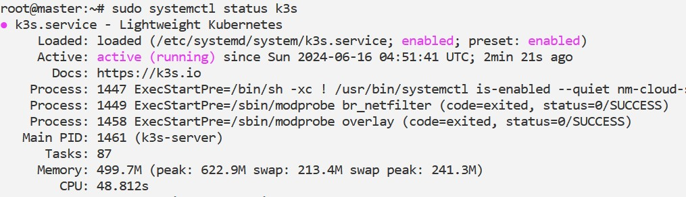
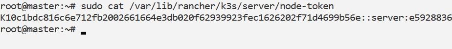
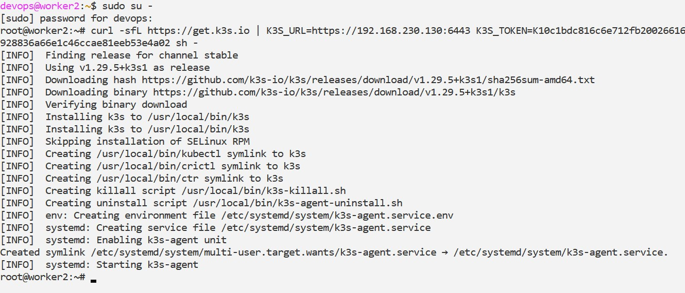
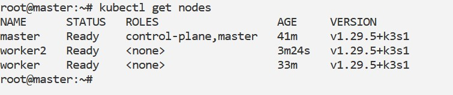

Table of Contents
Steps to make a K3s Cluster with one Master and one Worker node
1. Install K3s on the Master Node
SSH into your master node and run the following command to install K3s:
curl -sfL https://get.k3s.io | sh -
This command downloads and installs K3s along with its dependencies. After installation, K3s should automatically start running as a systemd service.
To check the status of K3s, you can use:
systemctl status k3s
2. Retrieve the K3s Cluster Token
K3s generates a cluster token during installation that allows other nodes to join the cluster securely. Retrieve this token from the master node:
cat /var/lib/rancher/k3s/server/node-token
Save the token securely, as you'll need it to join the worker node to the cluster.
3. Install K3s on the Worker Node
SSH into your worker node and run the installation command, specifying the master node's address and the cluster token obtained in the previous step:
curl -sfL https://get.k3s.io | K3S_URL=https://
Replace
Steps to add more Worker nodes to K3s Cluster (Optional)
1. Prepare the New Worker Node
Ensure your new worker node meets the prerequisites:
- It should be a Linux-based machine (virtual or physical) with Ubuntu, Debian, CentOS, or Raspbian.
- You should have SSH access to this node with sudo privileges.
2. Repeat the process of above Step-3
3. Verify Worker Node Join
Once the installation completes, switch back to the master node and verify that the new worker node has successfully joined the cluster:
kubectl get nodes
The output showed all nodes in the cluster, including the new worker node (worker2).
References
- Author, A. (2022). Book Title. Publisher.
- Author, B. (2020). Article Title. Journal Title, 10(2), 12-15.